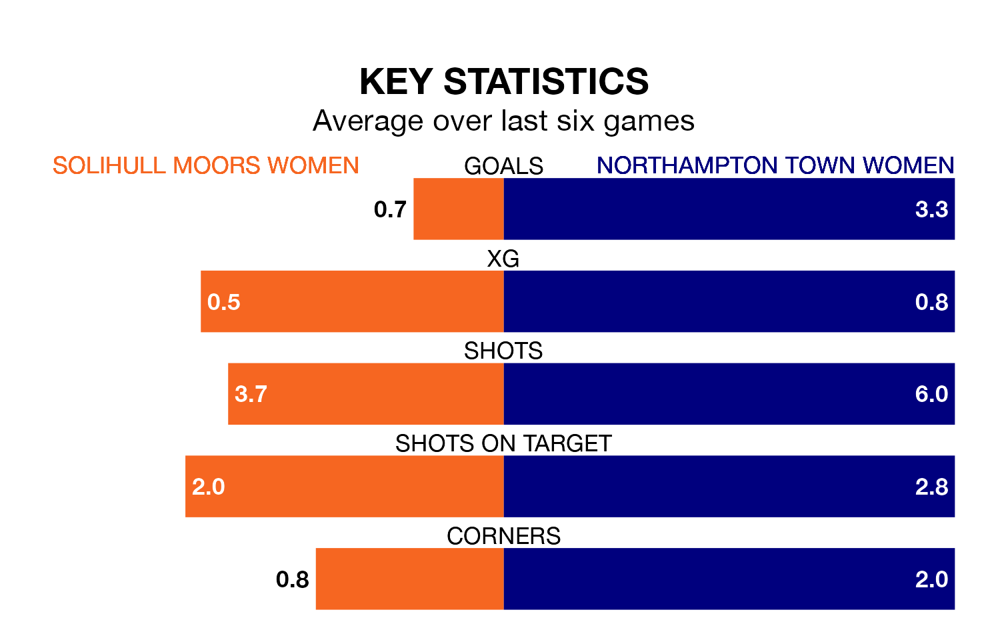

Northampton Town Women face a challenge to maintain their high-scoring form away against a tight Solihull Moors Women defence on Thursday.
With 31 goals in 13 games, Northampton Town are the fourth-highest scorers in the Women's National League Division One Midlands ahead of the 7.45pm kick-off.
They face a Solihull Moors side who have scored 17 in 14 matches, but conceded only 19 goals, putting them fourth among the league's tightest defences – only Loughborough Lightning Women, Boldmere St. Michaels Women and Sporting Khalsa Women have conceded fewer goals.
Solihull Moors are in disappointing form in the Women's National League Division One Midlands, with one win and three draws from their last six games.
With four wins and two losses over that period, Northampton Town's form is much better – they have taken 12 points from 18, compared to the hosts' six.
The away side are fifth in the table after 13 games, of which they have won seven and drawn one, earning 22 points.
Solihull Moors are one place behind Northampton Town in sixth, with five wins and four draws putting them on 19 points.
In the last three years, Solihull Moors and Northampton Town have played each other on three occasions. They won one each, and they drew once.
Their last meeting was on September 7, when they played out a 2-2 draw.
Solihull Moors's last match was on February 11, a 0-0 draw against Sutton Coldfield Town Women.
Northampton Town beat Notts County Women 6-0 last time out, on February 4.
Updated: 12:18 (UTC), 19/02/24